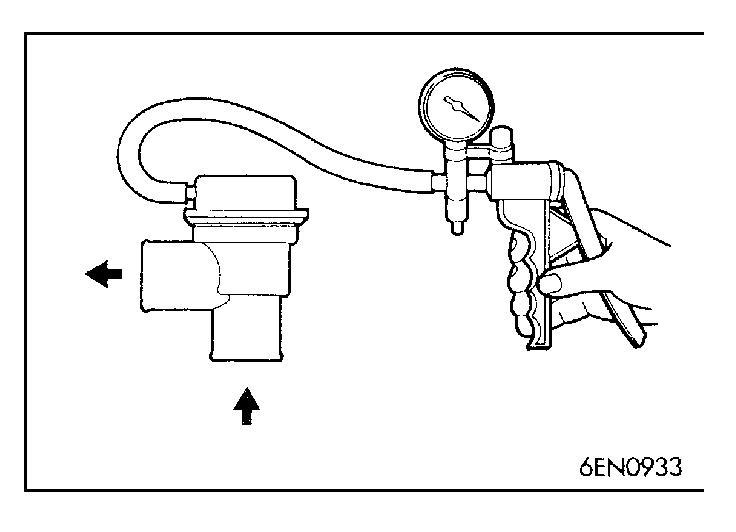

![[Previous]](https://mitsubishitechinfo.com/data/F24S/BUTTONS/fprevg.png)
![[Next]](https://mitsubishitechinfo.com/data/F24S/BUTTONS/fnextg.png)

TURBOCHARGER BYPASS VALVE CHECK
<Turbo>
(1)Remove the turbocharger bypass valve.
(2)Connect the hand vacuum pump to the nipple of the turbocharger bypass valve.
(3)Apply a negative pressure of approx. 53 kPa (16 in.Hg) and check operation of the valve. Also check that air tightness is maintained.
Negative pressure
Valve operation
Approx. 53 kPa (16 in.Hg)
It starts opening